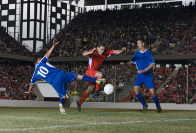

Matches
Chelsea 0-1 Arsenal: Gabriel Goal the Difference at Stamford Bridge
In a tightly contested match at Stamford Bridge, Arsenal clinched a crucial 1-0 victory against Chelsea, with Gabriel's goal proving to be the decisive factor

The game showcased resilient defensive displays from both sides, creating a tense atmosphere throughout. Arsenal's Gabriel rose to the occasion, capitalizing on a set-piece opportunity, slotting home the lone goal. Despite Chelsea's persistent attacks and numerous attempts, they couldn't breach Arsenal's defense. This win holds significance for Arsenal, marking a vital triumph against a strong Chelsea side in a hard-fought encounter.